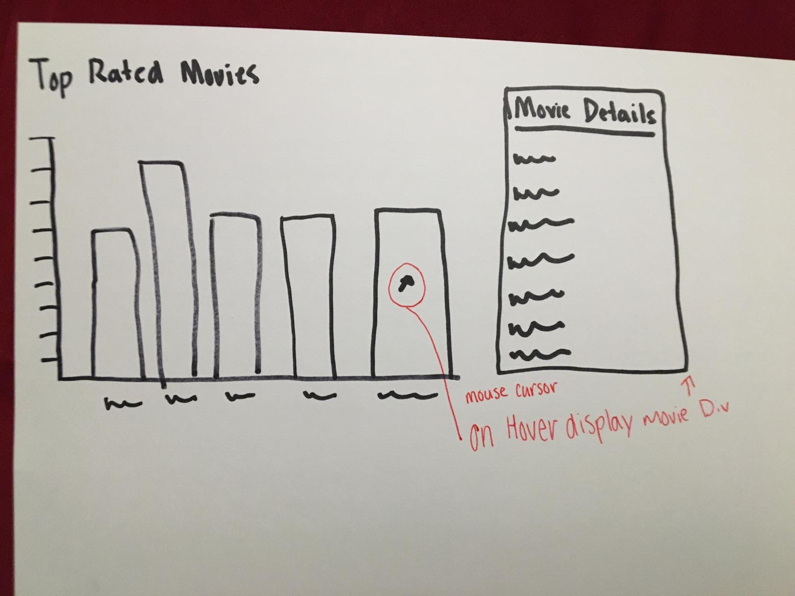
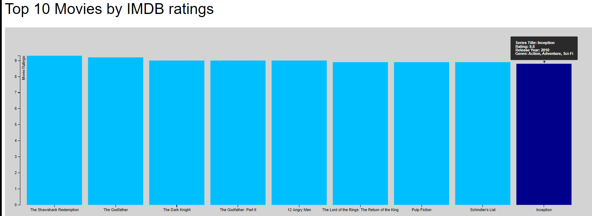

Done by: Jesse Champoux(Solo)
Design Process:
For designing my visualization I need to find a data set that interested
me. I found a data set of movie ratings based on
IMDB's ratings. Looking at
the data set I wanted to show the top rated movies in the data set. Creating a
bar chart was my
idea moving forward. Designing the visualization I needed
to gather the top 10 rated movies and display them on a bar chart.
The initial design process, I wanted to show the movie details when a
user hovered over the bar column. I wanted users to be
able to access the
information of each movie in the bar chart. I wanted to display the Title, Rating,
Genre and Release Year.
I came up with a design when they hovered
over they would see the information to the right of it. I played around with the
visualization
on my HTML page and ran into some problems. The big problem
I as running into was that the information was not displaying like I wanted it.
I
could not get anything other than the title to display, once I added more
elements such as the release year nothing would display once hovering
over a
bar column. This problem meant I needed to figure out how to fix the bugs or
come up with a different solution. After hours on hours fiddling
around with the
code, I finally started looking for alternatives. After searching around for possible
solutions I decided to go with making a
D3 tooltip function. Creating a tooltip
allowed me to display information and messages when a user hovered over a
column.
I used this tooltip found on D3's website as reference when building mine.
It allowed me to add however many attribute from the data set as I wanted.
After
further investigation on how many attributes to include I came to the conclusion to
only have the original plan as stated before. I went ahead
and added the title,
rating, release year, and genre of each movie.
Below picture is the initial design of my visualization:

Rationale:
For the rationale behind the visualization, I decide to keep all the colors of the
charts the same color. I went with a blue color.
The reason I kept all the bars the
same color was so I didn't have to have colors coordinated for each movie. This
eliminated the need for a legend
and having various colors clash for possible
colorblind users. Instead I opted into having each bar labeled by the title of the
movie.
This allowed users to see which bar was which instead of having to match
color together. I decided to arrange the chart from the highest rating to
the lowest
rating. This also could help users see which is higher a lot quicker than if the bars
were randomly put on the axis. Now users could see
that the far left is the higher
rated movies while the further right you go on the chart the ratings starts to decrease.
When a user hovers over a
column it will change to a darker blue so it indicates
which bar they are looking at. I decided to have the tooltip display at the top with
a black
and white box so it can be easily read.
Questions:
With my visualization I wanted to answer mainly, "What movies were at the top
when considering the IMDB ratings?".
Creating a bar chart would easily be able to
answer the main question that I had. One thing that I also incorporated so I could
answer
other questions was the tooltip. Questions like, "What year were the top
movies made in?", can be answered using the visualization.
For example the latest
movie to break the top 10 in ratings was in 2010 with Inception as seen below.
